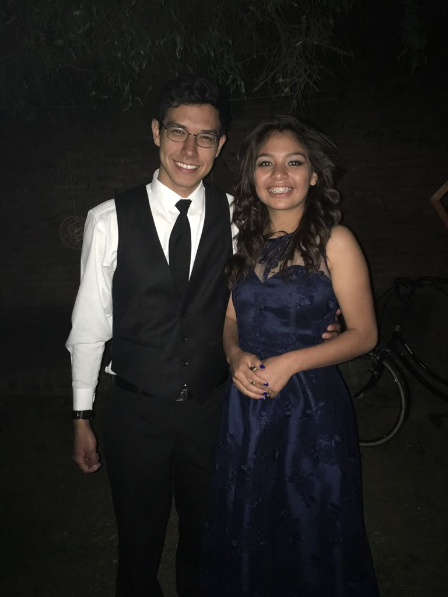
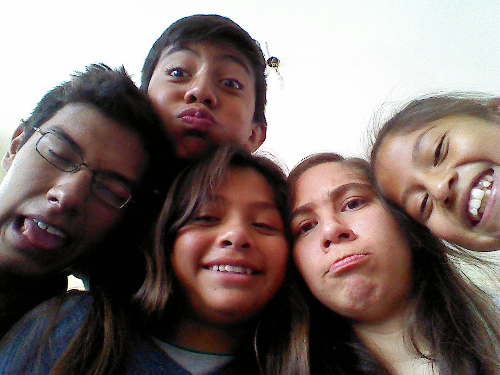

|  |
Ale, mi querida Celeste! Felicidades en tus 16 años! Doy gracias primeramente a Dios que te regala un año más de vida!!. Estoy tan agradecido el poder haber sido parte del año que pasó y espero poder llegar a serlo del año que viene. Sabes que te quiero muucho! (talvez un poco de más ejeje) y pues te deseo siempre lo mejor. Mi deseo más grande es, que crezcas en el temor a Jehova, en buscar agradarle a Él cada día, ser un ejemplo de mujer, y una cristiana dedicada. Afanes vienen, cosas difíciles, pero si podemos buscar a Dios en el día a día podemos tener victoria y sabiduría. Nunca dejes de acercarte a Él, para que en lo que sea que venga adelante tengas gozo del futuro que Dios te preparó. Oro constantemente por vos y que Dios guarde tu vida en todo sentido, y yo sé que Dios escucha….:) |
|
Espero que hayas pasado un día excelente y pues que sigas teniendo días geniales....xD Te mando un enorme beso y abrazo! Y ahora....pues como sabes que me gusta los recuerdos...y siempre te digo que las fotos me ayudan a recordar y no me gusta borrarlas....xD Acá te van algunas aunque no te gusten jajajaja You look great in every single one of them. Y yo no me quejo xP jajaja. ;)
Ya pasaron unos 4 años y medio desde que te conocí y un casi el mismo tiempo que te he llegado a querer de una forma tan grande que a veces yo mismo no me la esperaba. Gracias a Dios llegue a compartir muchas cosas contigo.
Esta foto es de las primeras jajaj cuando jugamos con mi tablet un domingo para sacar fotos, aunque la cámara era pésima jajaja Te acuerdas?? Y seguidamente, cuando decidiste que yo arruinaba la foto, porque era muy feo, y me cortaste y me enviaste la de blanco y negro XP I hei yu ;)
La fiesta que casi tu organizaste para la jajajaj Fue un lindo detalle tuyo y un dia divertido.
Esa vez cuando iba a tu casa para macanear con Uzaco y Javo, y ustedes me pidieron que les saque foto, además de invitarme el mejor de sus cafes -_- nunca lo olvidare. Jajajajaj
No sé por qué rayos me enviaste la foto de sus pies pero bueno...aún recuerdo esos tennis que los hiciste trizas jajajaja
Esta otra cuando fuiste a la casa de tu amiga en la lomas de Aranjuez... jajaj y no me acuerdo si te faltaste o llegaste tarde a la reunión por eso xP
Y cuando el Charly me saco información y supo la verdad. Y yo le enseñaba en su casa. Una tarde cuando me hablaste, no me dejaba en paz, ajajaj me molestaba y quería mandarte audio. No me quería atender jajaj y bueno al final decidimos mandarte foto… “de lo que el chico no me dejaba enseñarle y solo me molestaba.”
I can go on, but those are enough explanations for now. I’ll leave some more pictures of fun memories you might have of the past years. I hope you can remember most of them. I couldn’t get the best pictures, especially since you never want to give me your good ones hahah but oh well, here are mine.